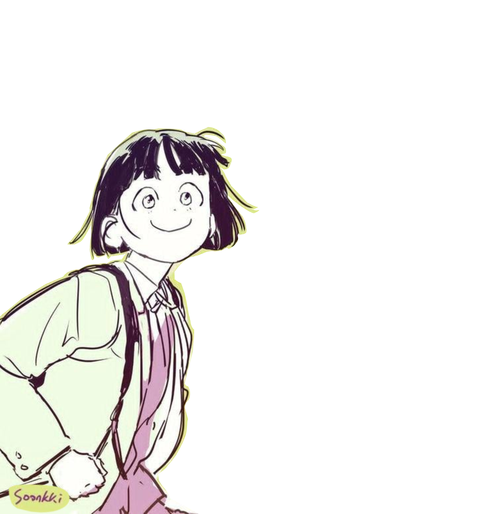
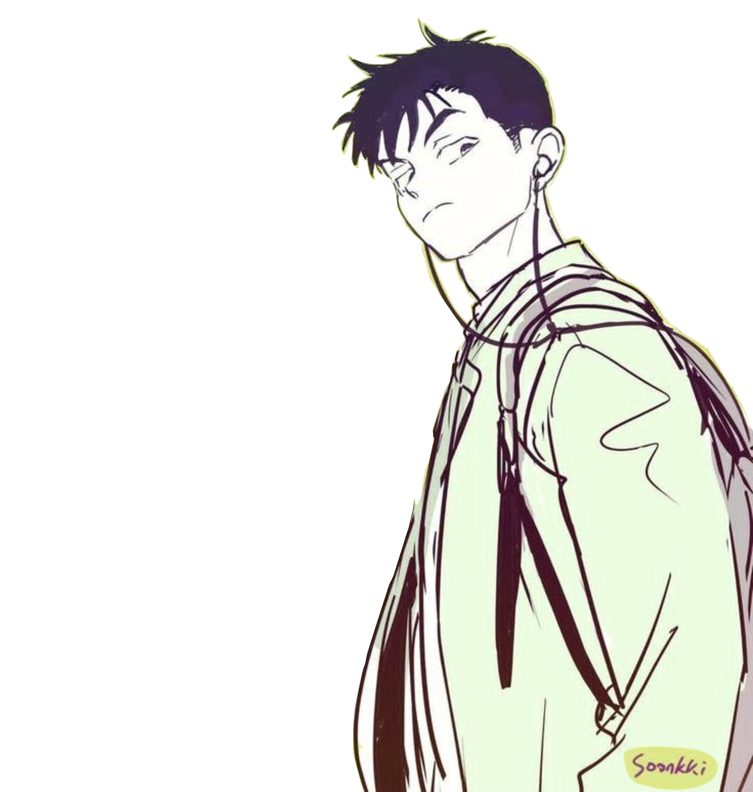

When, in disgrace with fortune and men’s eyes,
I all alone beweep my outcast state,
And trouble deaf heaven with my bootless cries,
And look upon myself and curse my fate,
Wishing me like to one more rich in hope,
Featured like him, like him with friends possessed,
Desiring this man’s art and that man’s scope,
With what I most enjoy contented least;
Yet in these thoughts myself almost despising,
Haply I think on thee, and then my state,
(Like to the lark at break of day arising
From sullen earth) sings hymns at heaven’s gate;
For thy sweet love remembered such wealth brings
That then I scorn to change my state with kings.
Sonnet 29 was written by William Shakespeare, probably in 1609. It’s about a person who feels lonely, unlucky, and unhappy with his life. At the beginning, the speaker compares himself to other people and wishes he had what they have. He wants their talents, friends, and opportunities. Because of this, he starts to feel even worse about himself. However, his feelings begin to change when he remembers someone he loves. Shakespeare shows that love can turn sadness, jealousy, and self-doubt into hope and happiness.
The poem shows the speaker’s self hatred through the phrase “curse my fate,” which reveals how disappointed he is with his situation. He also wishes that he were more like other people, showing that he is jealous and unhappy with himself. A major turning point happens when Shakespeare uses the word yet, because this is where the speaker’s mood begins to change. He compares himself to a “lark at break of day arising,”where we can imagine an image of something rising from darkness into light. The lark represents the speaker’s feelings becoming happier and more hopeful after thinking about the person he loves. Shakespeare uses contrast between the gloomy beginning and the hopeful ending to show how powerful love can be.
Sonnet 29 teaches that a person’s view of life can change when they remember what truly matters to them. The speaker begins by focusing on what he lacks and what others have, but he later realizes that love gives him something more valuable than success or status. By the end of the poem, he feels emotionally rich because of the love he remembers. He even says that he would not trade his life with a king, showing how much his perspective has changed. The poem is still relevant today because many people compare themselves to others and feel insecure about what they do not have. Shakespeare reminds readers that meaningful relationships and genuine love can give people a stronger sense of worth and happiness.

